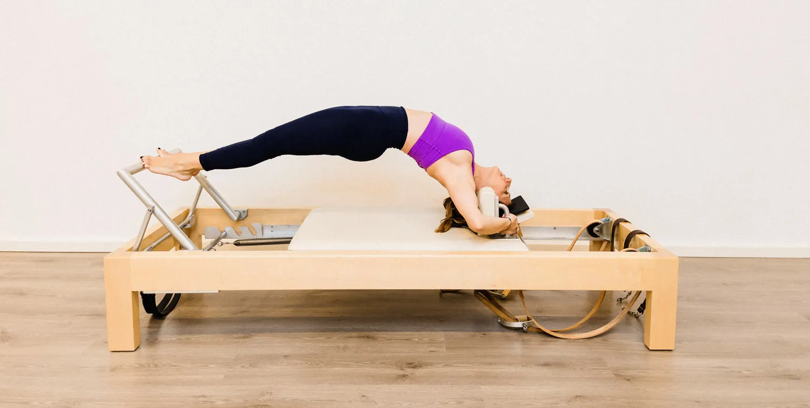

Roi Karpathiou
Certified Classical Pilates Instructor, implementing the Pilates method as taught by Joseph Pilates.

The Pilates method always keeps fascinating me.
Coming from the dance world and having a back injury, I first discovered Pilates in Athens back in 2006 after I finished my MA in Performance Studies in the U.K.
I finished my Pilates training in 2008, taught by Evgenia Papadopoulou, a student of Romana Kryzanowska.
My passion for knowledge and always going deeper into the method grew as the years passed by. From 2011 to 2022 I lived in Abu Dhabi and I attended numerous workshops, events and classes with many exceptional teachers around the world.
In 2020-2021 I completed the ‘Weekends With Jay’ program (60 hours) taught by the Pilates elder Jay Grimes in Vintage Pilates. This was created for 20 teachers who wanted to go deeper into the classical method and explore the way the method was taught to Jay by Joe Pilates and his wife Clara.
During that year I met Gloria Gasperi, 2nd generation teacher, student of Jay Grimes and one of the very few chosen to complete the ‘Teaching the Work’ program at Vintage Pilates, L.A. In 2022-2023 I attended her Master Program in Italy, created for teachers that would like to keep exploring, connecting and understanding the Pilates method.
As the years pass by, the Pilates method always keeps fascinating me. Having had the honour to meet teachers from around the world, I was pleased to host the Athens Classical Pilates Conference 2024, bringing together four world-renowned teachers that I have been inspired by.
“Pilates for me is the perfect source of life. Working hard to find your inner strength. Bringing you to a place where your body, mind and spirit work together to create a better version of yourself.”
Roi Karpathiou
From Athens to Abu Dhabi, and back.
Twenty years of practice, study and teaching, always closer to the method as Joseph Pilates taught it.
Discovering Pilates
Coming from the dance world and having a back injury, I first discovered Pilates in Athens, after I finished my MA in Performance Studies in the U.K.
Certified in classical Pilates
I finished my Pilates training, taught by Evgenia Papadopoulou, a student of Romana Kryzanowska.
Abu Dhabi
I lived in Abu Dhabi and attended numerous workshops, events and classes with many exceptional teachers around the world.
Weekends With Jay
I completed the ‘Weekends With Jay’ program (60 hours) taught by the Pilates elder Jay Grimes at Vintage Pilates, created for 20 teachers who wanted to go deeper into the classical method and explore the way it was taught to Jay by Joe Pilates and his wife Clara.
Master Program with Gloria Gasperi
I attended Gloria Gasperi’s Master Program in Italy, created for teachers who would like to keep exploring, connecting and understanding the Pilates method.
Athens Classical Pilates Conference
I hosted the Athens Classical Pilates Conference 2024, bringing together four world-renowned teachers that I have been inspired by.
Pilates E-Motion in Greece
I represent Pilates E-Motion, Gloria Gasperi’s Classical Pilates School, in Greece.
Moments of practice.
A fully equipped classical studio, with apparatus made by Legacy Pilates.